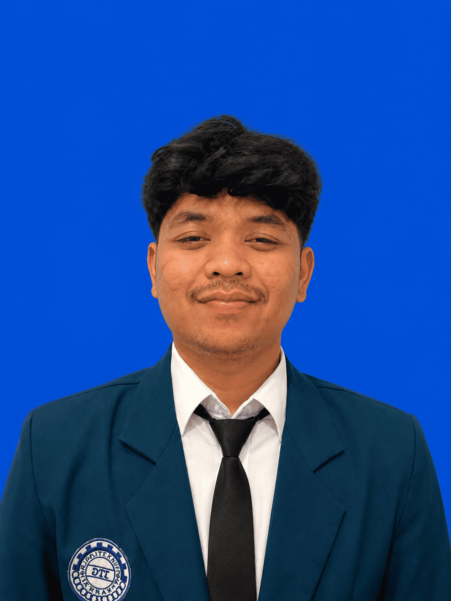
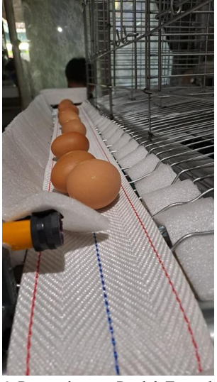
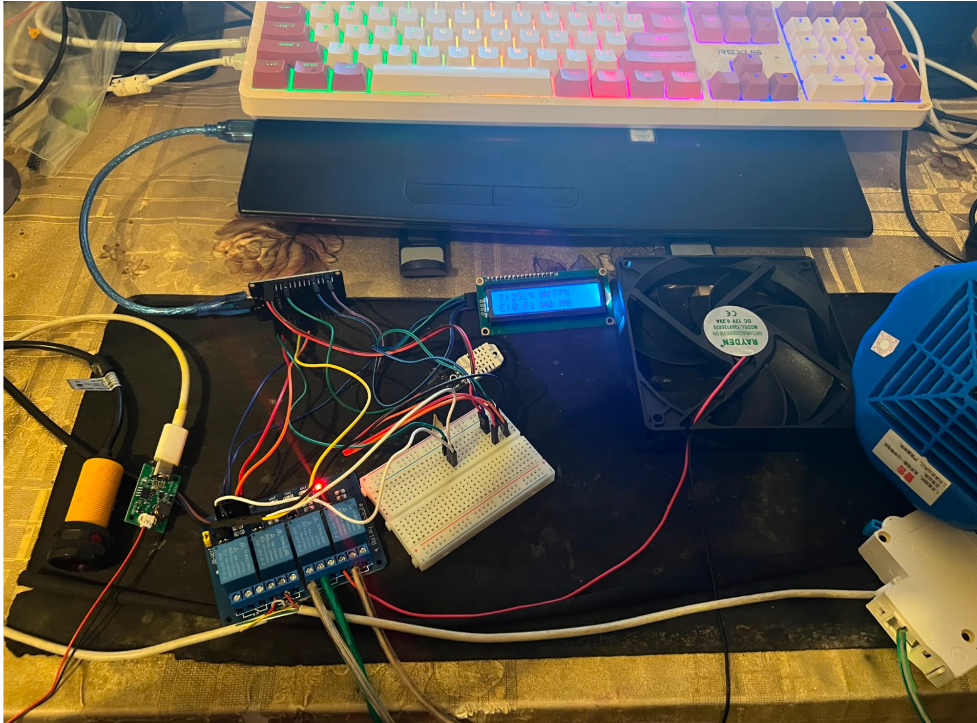
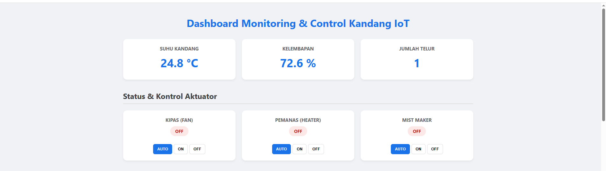
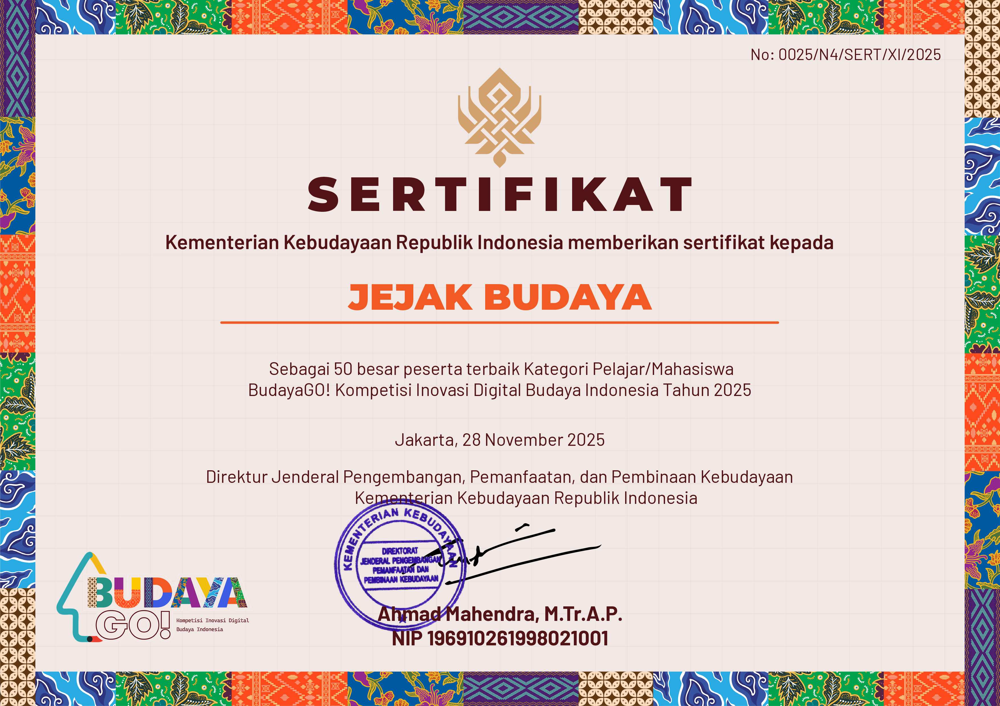
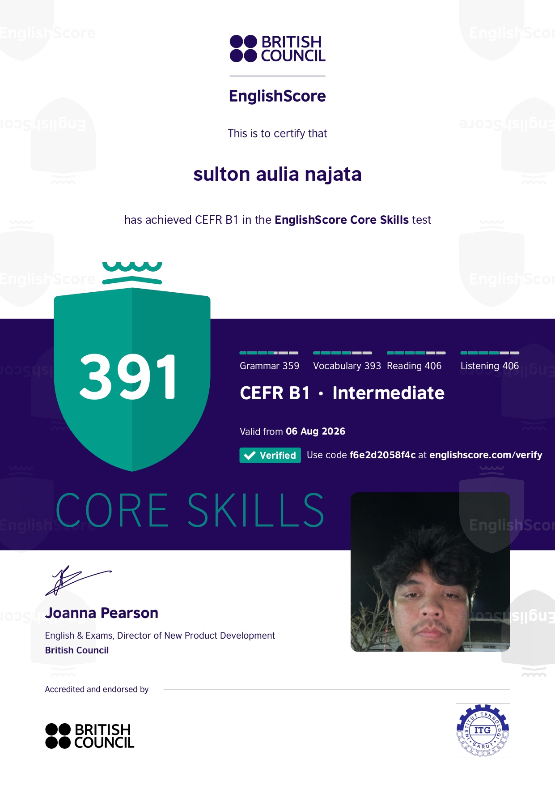
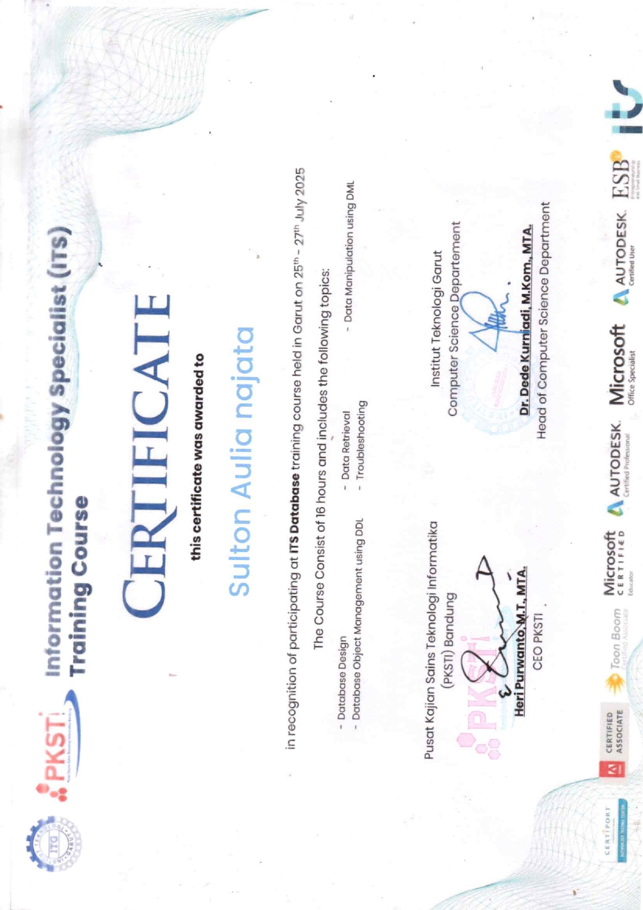

Hello, I'm
Saya memiliki latar belakang Teknik Informatika dengan pengalaman dalam pengembangan website, Fullstack Development, Front-End Development, serta pengalaman di bidang Manufacture dan Quality.

ABOUT ME
Saya merupakan lulusan Teknik Informatika yang memiliki ketertarikan pada pengembangan website dan teknologi. Saya memiliki pengalaman dalam Fullstack Development dan Front-End Development serta pengalaman di bidang Manufacture dan Quality.
Saya memiliki pengalaman sebagai Fullstack Developer di PT Ctech ERP Indonesia dan sebagai Front-End Developer dalam kerja praktik di Dinas Peternakan dan Perikanan Kabupaten Garut.
Selain pengalaman di bidang teknologi, saya juga memiliki pengalaman di bidang Manufacture dan Quality pada Odoo di Kunikita Persada. Pengalaman tersebut membantu saya memahami proses kerja, pengolahan data, kontrol kualitas, serta pemecahan masalah secara sistematis.
EXPERIENCE
Beberapa pengalaman yang saya peroleh dalam bidang pengembangan website serta Manufacture dan Quality.
Fullstack Developer
2024
Berkontribusi dalam pengembangan dan pengelolaan aplikasi berbasis web. Selama menjalankan kegiatan magang, saya terlibat dalam pengelolaan aplikasi pada bagian Manufacture dan Quality untuk Kunikita Persada.
Front-End Developer
Kerja Praktik
Berperan dalam pengembangan bagian antarmuka website dengan menerapkan struktur halaman, tampilan yang responsif, serta memperhatikan kemudahan penggunaan bagi pengguna.
Manufacture & Quality
Manufacture & Quality Staff
Memiliki pengalaman dalam proses Manufacture dan Quality, termasuk menjalankan proses kerja, melakukan kontrol kualitas, serta memastikan pekerjaan berjalan sesuai dengan prosedur yang ditetapkan.
MY PROJECTS
Beberapa proyek dan kegiatan yang pernah saya kerjakan selama perjalanan akademik dan pengembangan kemampuan di bidang teknologi.

P2MW 2024
Proyek otomasi proses panen telur menggunakan sistem konveyor yang dikombinasikan dengan teknologi Internet of Things (IoT) untuk membantu proses monitoring dan otomasi.


IoT & Smart Farming
Pengembangan teknologi Internet of Things (IoT) untuk mendukung proses peternakan ayam petelur, khususnya dalam otomasi panen telur menggunakan konveyor serta monitoring dan kontrol suhu lingkungan kandang.

Kemendikbudristek
Mengikuti kegiatan Budaya Go yang diselenggarakan dalam program Kemendikbudristek sebagai bagian dari pengalaman pengembangan diri dan kegiatan kemahasiswaan.
ORGANIZATION
Pengalaman berorganisasi yang membantu saya mengembangkan kemampuan komunikasi, koordinasi, pengawasan, dan pengelolaan kegiatan.
Badan Perwakilan Mahasiswa
Berperan dalam Komisi 3 yang memiliki fokus pada controlling dan budgeting. Dalam organisasi, saya terlibat dalam proses pengawasan serta pengelolaan dan pemantauan anggaran kegiatan.
CERTIFICATES
Beberapa sertifikasi dan pelatihan yang telah saya ikuti untuk mengembangkan kemampuan di bidang teknologi dan pengembangan perangkat lunak.

English Certification
Sertifikasi kemampuan bahasa Inggris melalui EnglishScore dengan hasil CEFR B1 Intermediate.

Database Certification
Sertifikasi database dari Certiport dengan hasil skor 893 dan status Pass.
CONTACT
Jika ingin berdiskusi mengenai pekerjaan, project, atau peluang kerja sama, silakan hubungi saya melalui kontak berikut.